Примеры выполненных работ
Двойной памятник. Открытая плита. Тумба. Стелла. Тротуарная плитка с рисунлом из бетона.
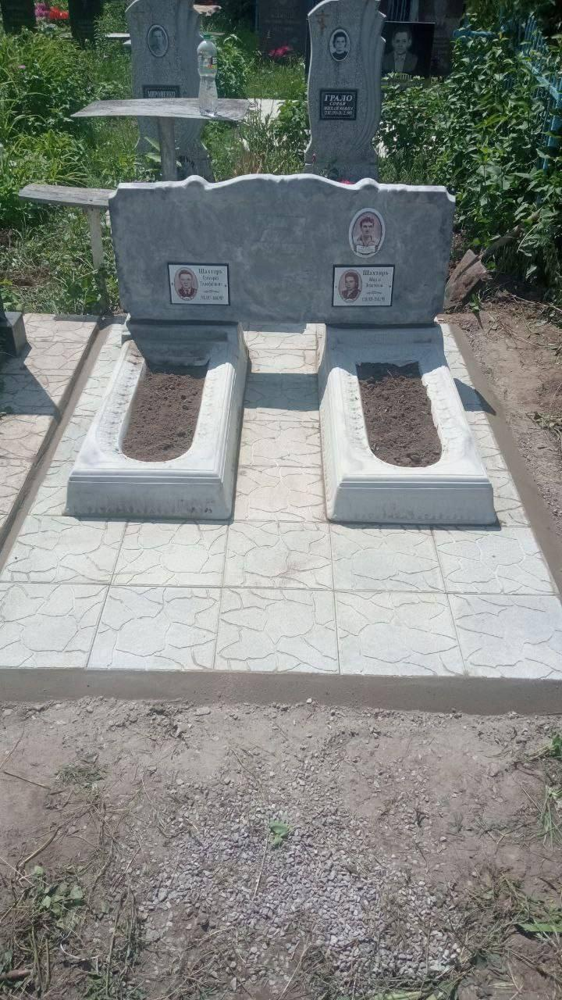10000
Открытая плита. Тумба. Горизонтальная стелла из черного гранита. Тротуарная плитка с рисунлом из бетона.
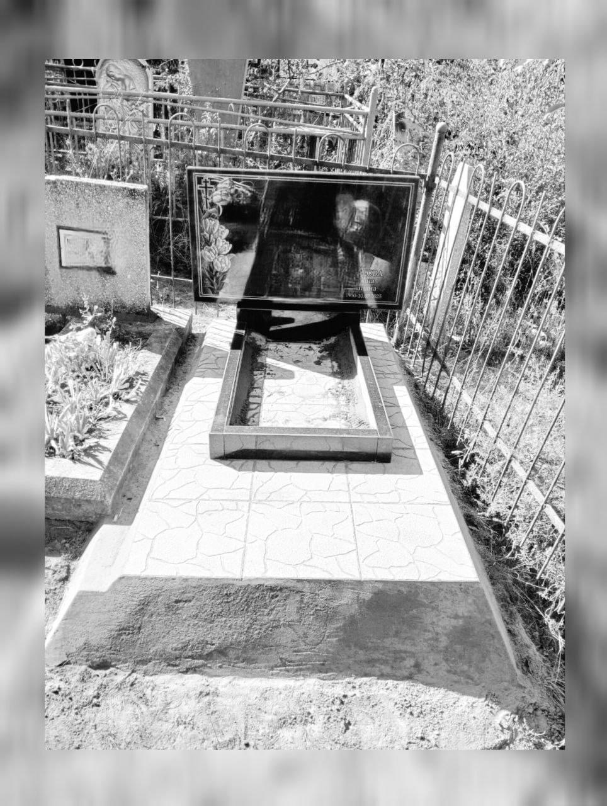Цветник европейский из гранита
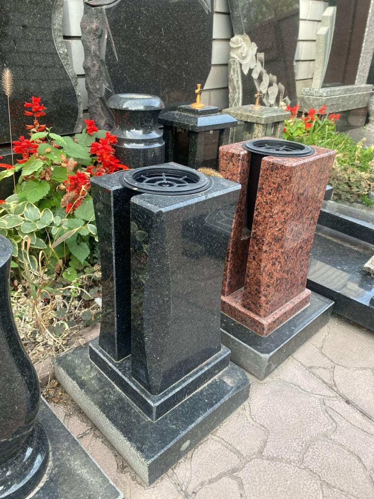Открытая плита. Тумба. Вертикальная стелла из черного гранита. Стелла из бетона с объемным рисунком. Цветник из черного гранита. Тротуарная плитка с рисунлом из бетона.
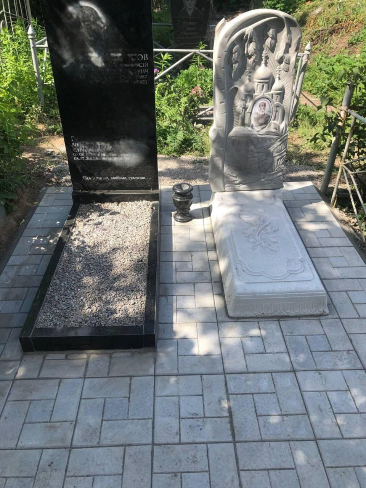Открытая плита. Тумба. Вертикальная стелла из черного гранита. Установлен на грунте.
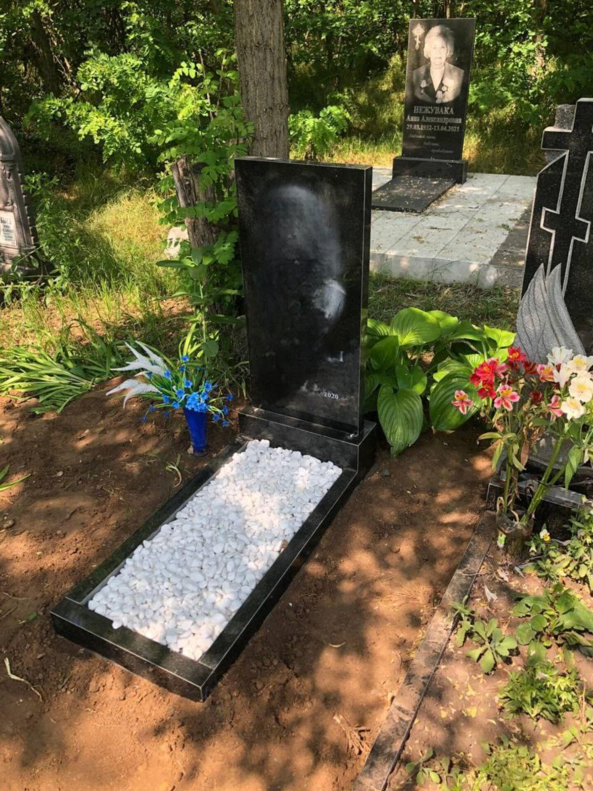Закрытая плита. Тумба. Вертикальная стелла из черного гранита и бетона. Цветник из черного гранита. Тротуарная плитка с рисунлом из бетона. Лавочка.
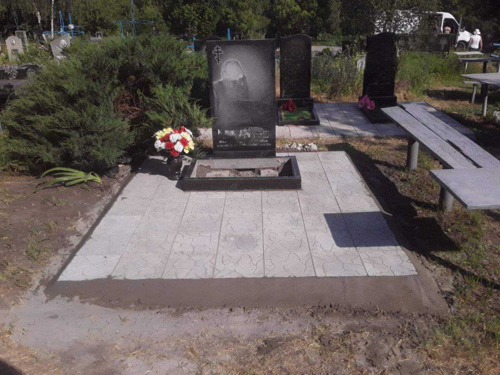Европейский цветник из черного гранита.

Плитка из бетона. Узор тучка.
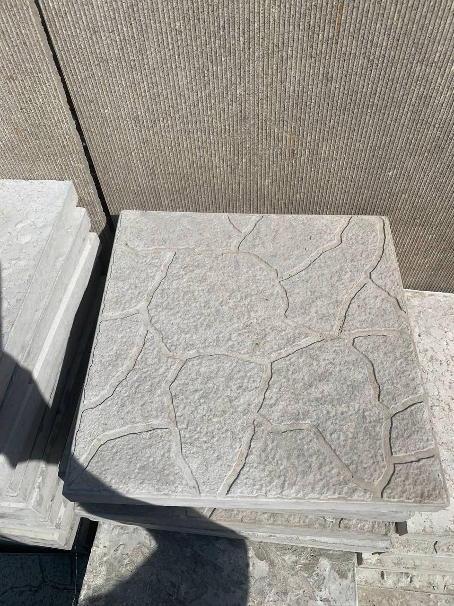Плитка из бетона. Узор паркет.
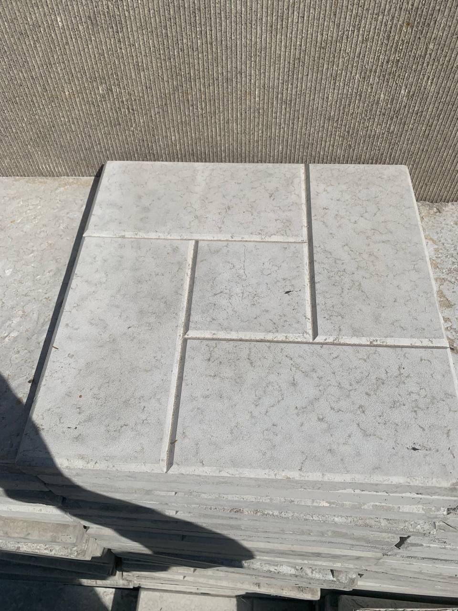Комплекс. Два памятника с закрытой плитой, тумбой, вертикальной стеллой из черного гранита. Оградка из металла. Серая мраморная плитка.
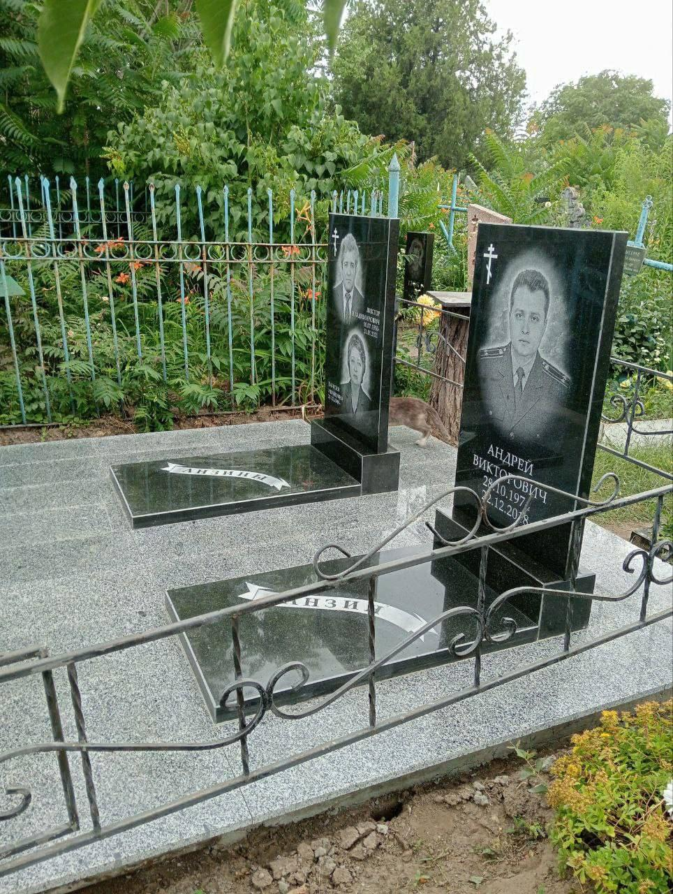Открытая плита. Тумба. Вертикальная стелла из черного гранита. Плитка из бетона.
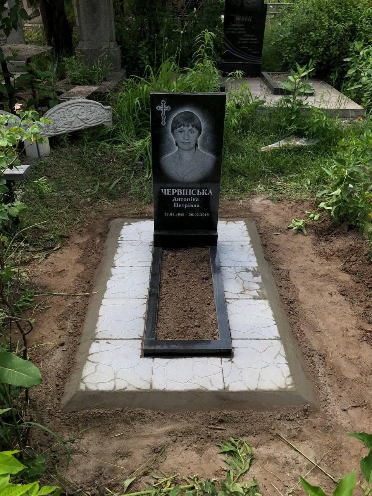Закрытая плита с рисунком. Тумба. Вертикальная стелла из черного гранита. Тротуарная плитка с рисунлом из бетона.
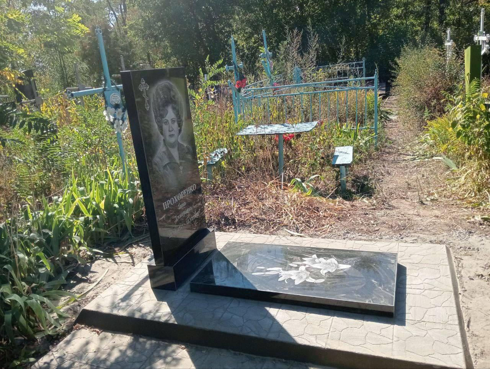Комплекс. Два памятника с закрытой плитой, тумбой, вертикальной стеллой из черного гранита. Цветник из черного гранита. Бетонная плитка. Дорожка из плитки.

Комплекс. Комплекс с открытой плитой, тумбой, горизонтальной стеллой из черного гранита. Бетонная плитка. Дорожка из плитки.
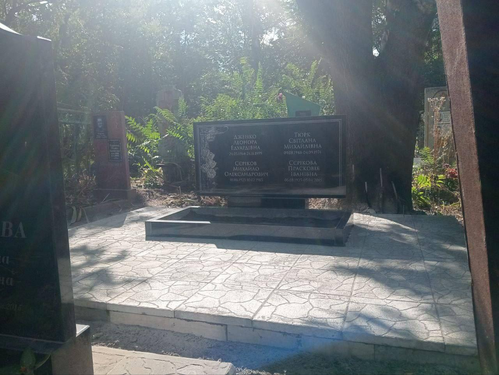Вертикальная стелла с рбъемным рисунком. Тумба. Открытая плита из бетона. Плитка из бетона.

Вертикальная стелла с рбъемным рисунком. Тумба. Открытая плита из бетона. Плитка из бетона.
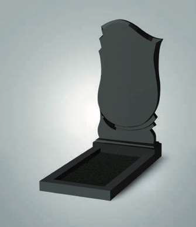